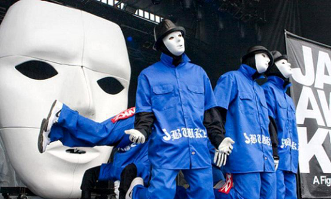
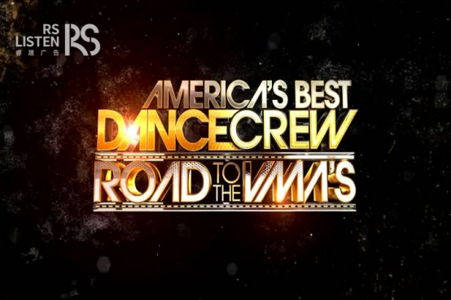
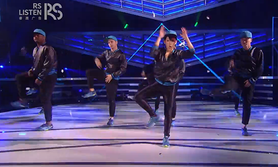
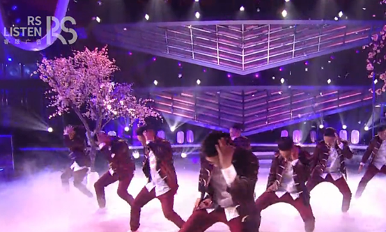

1983年举办的中央电视台春节联欢晚会和1990年播出的《正大综艺》使电视综艺节目进入大众的视野，但随着综艺的不断发展，在综艺节目井喷的2016，除了超过400档卫视综艺和100档原生网综的市场体系，据数据显示，截止2016年11月底，广电总局已备案的网综就有618档。不论是户外真人秀、棚内综艺还是颁奖晚会，闻所未闻的节目越来越多。且说到舞蹈类综艺，我们最先想到的是几年前东方卫视的《舞林大会》、《舞林争霸》，还是湖南卫视的《舞动奇迹》？

在中国这个综艺选秀节目盛行、泛娱乐的大时代下，睿晟传媒激流勇进，脱颖而出！取得与美国华纳的深度合作，后者将针对全美街舞大赛（America's best dance crew简称ABDC）的成功操作经验协助睿晟传媒在国内自创新的舞蹈秀栏目，并联袂精英团队进行本土化改造，倾力打造原汁原味中国首档顶级综合舞蹈竞技秀节目——《舞力觉醒》，此档节目也会与2017年在深圳卫视播出。

睿晟传媒为了保证中国街舞大赛的本土化改造，在理念、立意、形式、创意上更加适应中国文化土壤和受众观赏习惯， 邀请深谙中国电视节目土壤状况和中国流行音乐文化的著名策划人、音乐人、导演甲丁担纲《舞力觉醒》艺术总监，并组建国内一流电视节目制作团队，其中关键技术环节聘请欧美一流技术指导，力求打造一档既保留原版节目观赏性，又符合中国主流价值观，具有中国独创性的精品节目。对于嘻哈舞爱好者来说，这是一档错过会后悔的经典，对于普通观众而言，这是一场中国文化与街舞文化完美结合的视觉盛宴。

睿晟传媒为了带给公众一档街舞盛宴，可谓诚意十足。睿晟邀请了全球顶级舞编大师进行指导，同时也邀请国内重磅明星作为嘉宾评委助阵神侃互动，奉上独到的点评。《舞力觉醒》的创新舞蹈竞技模式更是让人期待，参赛选手以战队形式进行的对决，每个战队都会拥有战队的专属战旗，胜者留败者退。每场竞技都有不同的命题挑战，展示个性与多元化。每只舞曲都会有精心打造的的舞台，助力激情的舞蹈。这是一场力量与激情碰撞的对垒，哪支战队能摘下最后的桂冠，我们拭目以待。

从默默努力到万众瞩目，每个战队的背后都有不同的成长故事，而这些故事正是千千万万普通百姓拼搏、奋斗的写真，如今需要一个能表达百姓故事的平台，而睿晟传媒打造的《舞力觉醒》正好提供了这样一个舞台。
想必《舞力觉醒》也必将是大众在2017年最期待的节目之一。